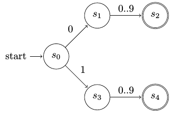

Εισαγωγή στη λεκτική ανάλυση¶
Στην ενότητα αυτή εξετάζουμε το πρώτο στάδιο ενός μεταγλωττιστή, τη λεκτική ανάλυση, η οποία μετατρέπει τον πηγαίο κώδικα (source files) σε σύμβολα (tokens). Το στάδιο αυτό μπορεί να ειδωθεί ως μια μορφή προ-επεξεργασίας (preprocessing), πριν την περισσότερο απαιτητική υπολογιστικά συντακτική ανάλυση.
Η λειτουργία της λεκτικής ανάλυσης¶
Η λεκτική ανάλυση (lexical analysis, lexing ή scanning) δέχεται ως είσοδο έναν-έναν τους μεμονωμένους χαρακτήρες του πηγαίου κώδικα και παράγει σύμβολα (tokens). Δείτε το επόμενο σχήμα:
Παράδειγμα λεκτικής ανάλυσης¶
Στην είσοδο έχουμε τους μεμονωμένους χαρακτήρες "int k;". Η λεκτική ανάλυση ομαδοποιεί στα σύμβολα KEYWORD_INT, SPACE, IDENTIFIER και SEMICOLON. Παρατηρείστε ότι:
Ένα σύμβολο (token) συνοδεύεται πάντοτε από το κείμενο που του αντιστοιχεί (lexeme).
Για τα
KEYWORD_INTήSEMICOLONξέρουμε πάντοτε ποιο κείμενο αντιστοιχεί ("int"και";"), συνεπώς το lexeme δεν μας ενδιαφέρει.Αντιθέτως, για το token
IDENTIFIER(ονόματα μεταβλητών κλπ) η πληροφορία του lexeme ("k") είναι σημαντική για τον μεταγλωττιστή.
Ο λεκτικός αναλυτής «καθαρίζει» την είσοδο, π.χ. απορρίπτοντας σχόλια ή τα κενά σε γλώσσες όπως η C. Αυτό βέβαια εξαρτάται από τη γλώσσα προγραμματισμού: για την Python, τα κενά της στοίχισης δεν πρέπει να απορριφθούν.
Τι δεν κάνει η λεκτική ανάλυση.
Θα πρέπει πάντοτε να θυμόμαστε ότι ένας λεκτικός αναλυτής δεν ασχολείται με τη σύνταξη: αυτό είναι αρμοδιότητα του επόμενου βήματος μεταγλώττισης, της συντακτικής ανάλυσης. Συνεπώς, εάν ο λεκτικός αναλυτής λάβει ως είσοδο "int 33.56;", θα πρέπει να εμφανίσει ως έξοδο τα [KEYWORD_INT, FLOAT_CONSTANT, SEMICOLON] χωρίς να παραχθεί σφάλμα.
Αυτόματα πεπερασμένων καταστάσεων¶
Από τη «Θεωρία Υπολογισμού»: Κάθε αυτόματο πεπερασμένων καταστάσεων (finite automaton –FA) είναι μια πεντάδα \((Q, \Sigma, \delta, q_0, F)\), όπου
\(Q\) ένα πεπερασμένο σύνολο καταστάσεων
συν μια κατάσταση σφάλματος \(q_e\)
\(\Sigma\) ένα πεπερασμένο αλφάβητο
σύνολο χαρακτήρων εισόδου
\(\delta \colon Q \times \Sigma \to Q\) η συνάρτηση μετάβασης
από την τρέχουσα στην επόμενη κατάσταση, με την εμφάνιση ενός νέου χαρακτήρα εισόδου
αν δεν υπάρχει μετάβαση, τότε σφάλμα
\(q_0 \in Q\) η αρχική κατάσταση
\(F \subseteq Q\) το σύνολο των καταστάσεων αποδοχής
εάν βρισκόμαστε εδώ όταν τελειώσει η ανάλυση, τότε αποδεχόμαστε το κείμενο εισόδου
Σε μια τυπική εφαρμογή μεταγλωττιστή, το αλφάβητο \(\Sigma\) είναι όλοι οι χαρακτήρες που αναγνωρίζει η γλώσσα προγραμματισμού.
Χρήση στη λεκτική ανάλυση¶
Πώς χρησιμοποιείται πρακτικά το αυτόματο FA στην λεκτική ανάλυση; Ο στόχος είναι να αναγνωρίσουμε συγκεκριμένες ακολουθίες (patterns) χαρακτήρων εισόδου. Κατά τη διαδικασία της αναγνώρισης θέλουμε να ξέρουμε σε κάθε στιγμή:
Ποιους χαρακτήρες έχουμε ήδη αναγνωρίσει έως τώρα;
Στο σημείο που βρισκόμαστε, ποιοι είναι οι επόμενοι έγκυροι χαρακτήρες;
Αυτό μπορεί να γίνει με τη βοήθεια ενός αυτομάτου. Δείτε την εικόνα που ακολουθεί:

Αυτόματο πεπερασμένων καταστάσεων για τα keywords long, term, test¶
Το αυτόματο αυτό είναι σχεδιασμένο για να αναγνωρίζει τρία keywords, τις λέξεις long, term και test.
Στην αρχή της διαδικασίας βρισκόμαστε στην αρχική κατάσταση \(s_0\).
Εάν ο πρώτος χαρακτήρας εισόδου είναι το t μεταβαίνουμε στην κατάσταση \(s_1\), αν είναι το l, στην \(s_2\). Για κάθε άλλο χαρακτήρα εισόδου δεν προβλέπεται μετάβαση, συνεπώς μεταβαίνουμε σε κατάσταση σφάλματος.
Όντας στις καταστάσεις \(s_1\) ή \(s_2\), διαβάζουμε τον επόμενο χαρακτήρα εισόδου και προχωράμε σε επόμενη κατάσταση αν αυτό είναι δυνατό.
Η διαδικασία επαναλαμβάνεται όσο δεν υπάρχει σφάλμα και όσο υπάρχουν επόμενοι χαρακτήρες εισόδου.
Όταν εξαντληθεί η είσοδος, ελέγχουμε αν βρισκόμαστε σε κατάσταση αποδοχής.
Αν όχι, δεν έχουμε αναγνωρίσει πλήρως κάτι από τα ζητούμενα, οπότε επιστρέφεται σφάλμα.
Αν ναι, έχουμε αναγνωρίσει το κείμενο που αντιστοιχεί στην κατάσταση που βρισκόμαστε (π.χ. αν είμαστε στην κατάσταση \(s_7\) έχουμε αναγνωρίσει τη λέξη term.
Συνοψίζοντας, είναι οι καταστάσεις του αυτομάτου που προσδιορίζουν σε ποιο σημείο της διαδικασίας αναγνώρισης βρισκόμαστε και ποιοι χαρακτήρες πρέπει να ακολουθήσουν.
Ένα αυτόματο πεπερασμένων καταστάσεων μπορεί να αναγνωρίσει ακολουθίες χαρακτήρων με απεριόριστο μήκος. Αυτό επιτυγχάνεται με τη χρήση loops στις ακμές του αυτομάτου. Δείτε για παράδειγμα το αυτόματο που ακολουθεί, το οποίο αναγνωρίζει ακολουθίες ψηφίων 0..9 οποιουδήποτε μήκους:

Αυτόματο πεπερασμένων καταστάσεων για αναγνώριση σειράς ψηφίων¶
Μπορεί η αρχική κατάσταση να είναι κατάσταση αποδοχής;
Θα μπορούσε το προηγούμενο αυτόματο να απλοποιηθεί μετατρέποντας την \(s_0\) σε κατάσταση αποδοχής με το loop 0..9 πάνω σε αυτήν; Η απάντηση είναι όχι: Αν το κάνατε, θα καταλήγατε σε ένα αυτόματο που θα αναγνώριζε το τίποτα (θα ήταν σε κατάσταση αποδοχής από την αρχή)!
Μια πολύ σημαντική ιδιότητα του ντετερμινιστικού αυτομάτου πεπερασμένων καταστάσεων είναι ότι η απόδοση της διαδικασίας αναγνώρισης δεν εξαρτάται από το μέγεθος του αυτομάτου (αριθμό καταστάσεων) αλλά μόνο από το μέγεθος του κειμένου εισόδου:
Για μέγεθος εισόδου \(m\) η απόδοση του αυτομάτου είναι \(\mathcal{O}(m)\), ανεξάρτητα από τον αριθμό των καταστάσεων του αυτομάτου.
Αυτό εξηγείται αν σκεφτούμε ότι για κάθε ένα νέο χαρακτήρα εισόδου κατά τη διάρκεια αναγνώρισης το αυτόματο θα κάνει το πολύ μία μετάβαση (αν η μετάβαση είναι εφικτή).
Πίνακας μεταβάσεων¶
Το αυτόματο πεπερασμένων καταστάσεων είναι μια θεωρητική μορφή. Για να υλοποιηθεί σε κάποια γλώσσα προγραμματισμού χρειαζόμαστε μια πιο συγκεκριμένη (concrete) μορφή. Ως ενδιάμεσο βήμα, μπορούμε να εκφράσουμε το αυτόματο με έναν πίνακα δύο διαστάσεων.
l |
o |
n |
g |
t |
e |
r |
m |
s |
|
|---|---|---|---|---|---|---|---|---|---|
s0 |
s2 |
s1 |
|||||||
s1 |
s3 |
||||||||
s2 |
s8 |
||||||||
s3 |
s6 |
s4 |
|||||||
s4 |
s5 |
||||||||
s5* |
|||||||||
s6 |
s7 |
||||||||
s7* |
|||||||||
s8 |
s9 |
||||||||
s9 |
s10 |
||||||||
s10* |
Όπως φαίνεται στο σχήμα, ο πίνακας έχει στις γραμμές του τις καταστάσεις του αυτομάτου και στις στήλες του τους αναμενόμενους χαρακτήρες εισόδου (το αλφάβητο του αυτομάτου). Οι τερματικές καταστάσεις σημειώνονται με το *. Στην πρώτη γραμμή του πίνακα τοποθετείται η αρχική κατάσταση \(s_0\).
Στη διασταύρωση γραμμής-στήλης τοποθετούμε τη νέα κατάσταση που μεταβαίνουμε.
Αν το κελί είναι άδειο, δεν υπάρχει μετάβαση από την τρέχουσα κατάσταση με τον δεδομένο χαρακτήρα εισόδου. Συνεπώς προκύπτει σφάλμα.
Πόσες τιμές σε κάθε κελί του πίνακα;
Κάθε κελί μπορεί να έχει μία μόνο (ή καμία) τιμή. Το αυτόματό μας είναι ντετερμινιστικό (αιτιοκρατικό). Αν υπήρχαν δύο ή περισσότερες τιμές, αυτό θα σήμαινε ότι με τον ίδιο χαρακτήρα εισόδου θα μπορούσαμε να μεταβούμε μη ντετερμινιστικά σε εναλλακτικές καταστάσεις.
Ερωτήσεις¶
Λεκτικός αναλυτής για τη γλώσσα C δέχεται ως είσοδο το string
k ; int. Τι πρέπει να επιστρέψει;
Θα απορρίψει τους χαρακτήρες εισόδου μέχρι και το
;και θα επιστρέψει μόνο τοKEYWORD_INT.Θα δημιουργηθεί σφάλμα, διότι δεν πρόκειται για έγκυρη σύνταξη της C.
Θα επιστρέψει τα σύμβολα
IDENTIFIER,SEMICOLON,KEYWORD_INT.
Σας δίνεται το αυτόματο του επόμενου σχήματος, το οποίο αναγνωρίζει διψήφιους αριθμούς από το
00έως το19για να το αξιολογήσετε. Τι λέτε;
Το αυτόματο δεν αναγνωρίζει το ζητούμενο σχέδιο (pattern).
Το αυτόματο είναι εν μέρει λάθος. Οι καταστάσεις \(s_1\), \(s_3\) πρέπει να συγχωνευτούν σε μία. Το ίδιο και οι καταστάσεις \(s_2\), \(s_4\).
Το αυτόματο είναι σωστό. Θα μπορούσε να γραφεί πιο κομψά με συγχωνεύσεις καταστάσεων αλλά αυτό δεν έχει σημασία στην απόδοση.
Γιατί στον πίνακα μεταβάσεων του παραδείγματος long, term, test οι γραμμές των τερματικών καταστάσεων είναι κενές;
Αυτό συμβαίνει πάντα με τις τερματικές καταστάσεις γιατί η αναγνώριση σταματά στο σημείο εκείνο.
Επειδή δεν υπάρχουν εξερχόμενες μεταβάσεις από τις καταστάσεις αποδοχής του συγκεκριμένου παραδείγματος.
Επειδή όταν βρισκόμαστε σε κατάσταση αποδοχής, για κάθε επόμενο χαρακτήρα προκύπτει σφάλμα.
Στον ίδιο πίνακα μεταβάσεων μπορεί μια γραμμή να έχει δύο η περισσότερα κελιά συμπληρωμένα;
Ναι. Αυτό σημαίνει ότι από την τρέχουσα κατάσταση υπάρχουν πολλαπλές μεταβάσεις, ανάλογα με την εμφάνιση διαφορετικών χαρακτήρων εισόδου.
Ναι. Αυτό σημαίνει ότι από την τρέχουσα κατάσταση μεταβαίνουμε σε μια μοναδική δεύτερη κατάσταση, με πολλούς διαφορετικούς χαρακτήρες εισόδου.
Όχι. Αυτό θα σήμαινε ότι με τον ίδιο χαρακτήρα μεταβαίνουμε σε διαφορετικές καταστάσεις.
Σχεδιάστε τον πίνακα μεταβάσεων για το αυτόματο αναγνώρισης ψηφίων.
Υλοποίηση FA μέσω Python¶
Στην ενότητα αυτή παρουσιάζεται μια λύση υλοποίησης αυτομάτων FA μέσω της γλώσσας Python για την αναγνώριση σχεδίων κειμένου (string patterns). Το ζητούμενο είναι μια «παραμετρική» λύση: να μπορούμε να κρατήσουμε τον κώδικα σταθερό, ανεξάρτητα από το αυτόματο που υλοποιούμε. Έτσι, η λύση έχει τα εξής μέρη:
Το αυτόματο που υλοποιούμε κάθε φορά εκφράζεται με τις κατάλληλες δομές δεδομένων της Python (λεξικά
transitionsκαιaccepts).Ο γενικός κώδικας αναζήτησης είναι σταθερός και ανεξάρτητος από το αυτόματο που υλοποιείται (συνάρτηση
scan()).Μπορούμε προαιρετικά να ομαδοποιήσουμε τους χαρακτήρες εισόδου, π.χ. τα ψηφία
0έως9(βοηθητική συνάρτησηget_char()).
Τα παραπάνω αναλύονται στις επόμενες παραγράφους.
Ο πίνακας μετάβασης στην Python¶
Ο πίνακας μετάβασης του αυτομάτου που παρουσιάστηκε στο θεωρητικό μέρος πρέπει να υλοποιηθεί με κάποια δομή της γλώσσας προγραμματισμού που χρησιμοποιούμε. Ενώ π.χ. στην C θα μπορούσαμε να εκφράσουμε τον πίνακα μεταβάσεων ως πίνακα δύο διαστάσεων, στην Python μπορούμε να χρησιμοποιήσουμε ένα λεξικό (dictionary).
Νέοι στην Python;
Δείτε κάποια βασικά στοιχεία χρήσης των λεξικών για να ξεκινήσετε.
Εκφράζοντας τις μεταβάσεις¶
Στο παράδειγμα του πίνακα που αναγνωρίζει τα long, term, test, έστω ότι βρισκόμαστε στην κατάσταση \(s_2\). Στην είσοδο εμφανίζεται ο χαρακτήρας o. Το αυτόματο μεταβαίνει στην κατάσταση \(s_8\). Για να εκφράσουμε αυτή τη μετάβαση, εισάγουμε στο λεξικό transitions το εξής:
transitions = {
's2': { 'o': 's8' },
}
Το 's2' εισάγεται ως κλειδί στο λεξικό transitions. Η τιμή για το κλειδί αυτό είναι ένα νέο λεξικό που περιέχει τις μεταβάσεις του \(s_2\). Εδώ είναι μόνο μία: με τον χαρακτήρα 'o' μεταβαίνουμε στο 's8'.
Με τον ίδιο τρόπο συμπληρώνουμε και όλες τις υπόλοιπες μεταβάσεις του αυτομάτου:
transitions = { 's0': { 't': 's1', 'l': 's2' },
's1': { 'e': 's3' },
's2': { 'o': 's8' },
's3': { 's': 's4', 'r': 's6' },
's4': { 't': 's5' },
's6': { 'm': 's7' },
's8': { 'n': 's9' },
's9': { 'g': 's10' }
}
Παρατηρήστε ότι οι καταστάσεις χωρίς εξερχόμενες μεταβάσεις (\(s_5\), \(s_7\) και \(s_{10}\)) δεν υπάρχουν στο λεξικό transitions.
Πώς χρησιμοποιείται το λεξικό; Στο προηγούμενο παράδειγμα, αν βρισκόμαστε στην κατάσταση \(s_2\) και στην είσοδο εμφανιστεί ο χαρακτήρας 'o', μεταβαίνουμε στην κατάσταση newstate που ορίζεται ως εξής:
newstate = transitions['s2']['o']
Φυσικά, πριν εκτελέσουμε το προηγούμενο, θα πρέπει πάντα να ελέγχουμε ότι
η κατάσταση
's2'υπάρχει μέσα στο λεξικόtransitions(δεν θα υπάρχει όταν η κατάσταση δεν έχει εξερχόμενες μεταβάσεις) και ότιο χαρακτήρας
'o'υπάρχει μέσα στο λεξικόtransitions['s2'](δεν θα υπάρχει αν η κατάσταση δεν έχει μετάβαση με τον χαρακτήρα αυτόν).
Οι καταστάσεις αποδοχής¶
Οι καταστάσεις αποδοχής εκφράζονται μέσω του λεξικού accepts:
accepts = { 's5': 'TEST_TOKEN',
's7': 'TERM_TOKEN',
's10': 'LONG_TOKEN'
}
Όπως φαίνεται από το προηγούμενο, κάθε κατάσταση αποδοχής υπάρχει ως κλειδί στο λεξικό accepts. Η αντίστοιχη τιμή είναι το σύμβολο (token) που θα επιστραφεί. Για παράδειγμα, όταν η τελική κατάσταση είναι η \(s_7\), τότε θα επιστρέψουμε το σύμβολο accepts['s7'].
Η συνάρτηση ταιριάσματος¶
Η συνάρτηση scan() είναι ο γενικός (και σταθερός) κώδικας αναζήτησης ταιριασμάτων κειμένου. Η λειτουργικότητα της συνάρτησης αντιστοιχεί στον παρακάτω ψευδοκώδικα:
Πάρε τον επόμενο χαρακτήρα εισόδου
Αν υπάρχει μετάβαση από την τρέχουσα κατάσταση με τον χαρακτήρα αυτόν:
Προχώρησε στην επόμενη κατάσταση.
Επανάληψη από την αρχή.
Αν δεν υπάρχει μετάβαση:
Έλεγξε αν βρισκόμαστε σε κατάσταση αποδοχής
Αν ναί, επιστρέφεται το σύμβολο που αντιστοιχεί σ' αυτή την κατάσταση αποδοχής
Αν όχι, επιστρέφεται σφάλμα.
Η συνάρτηση scan() παίρνει ως ορίσματα τα text (κείμενο για αναζήτηση ταιριασμάτων), λεξικά transitions και accepts (περιγραφή αυτομάτου) και state (αρχική κατάσταση).
def scan(text,transitions,accepts,state):
""" Starting from inital `state`, scans `text` while transitions
exist in `transitions` dict. After that, if on a state belonging to
`accepts` dict, returns the corresponding token object, else None.
"""
# initial position on text
pos = 0
while True:
c = get_char(text,pos) # get next char
if state in transitions and c in transitions[state]:
state = transitions[state][c] # set new state
pos += 1 # advance to next char
else: # no transition found
# check if current state is accepting
if state in accepts:
return { 'token': accepts[state],
'lexeme': text[:pos] }
# else, if on a non-accepting state
return None # error
Η συνάρτηση scan() μπορεί να λειτουργήσει με οποιοδήποτε αυτόματο, έχει όμως ένα ελάττωμα. Αυτό περιγράφεται και διορθώνεται στην επόμενη παράγραφο.
Προαιρετικά ταιριάσματα¶
Έστω ότι υλοποιείται με την προηγούμενη μέθοδο το αυτόματο της επόμενης εικόνας:

Αυτόματο για την αναγνώριση int και float αριθμών¶
Ο στόχος είναι η αναγνώριση ακεραίων αριθμών (στην κατάσταση \(s_1\)) και αριθμών με δεκαδικό μέρος (στην κατάσταση αποδοχής \(s_3\)).
Εάν το string εισόδου είναι το '123.', θα θέλαμε να αναγνωρίσουμε το 123 ως ακέραιο. Κάτι τέτοιο δεν θα συμβεί όμως με την τρέχουσα υλοποίηση της scan(), γιατί στο τέλος της αναζήτησης βρισκόμαστε στην κατάσταση \(s_2\), η οποία δεν είναι κατάσταση αποδοχής.
Αυτή η ατέλεια μπορεί να διορθωθεί εισάγοντας στη scan() τη δυνατότητα μνήμης, όπου φυλάμε την τελευταία κατάσταση αποδοχής απ’ όπου έχουμε περάσει. Αυτή η κατάσταση (αν υπάρχει) επιστρέφεται όταν δεν μπορούμε να προχωρήσουμε:
def scan(text,transitions,accepts,state):
""" Starting from inital `state`, scans `text` while transitions
exist in `transitions` dict. After that, if on a state belonging to
`accepts` dict, returns the corresponding token object, else None.
"""
# initial position on text
pos = 0
# memory object for last seen accepting state
matched = None
while True:
c = get_char(text,pos) # get next char
if state in transitions and c in transitions[state]:
state = transitions[state][c] # set new state
pos += 1 # advance to next char
# remember if current state is accepting
if state in accepts:
matched = { 'token': accepts[state],
'lexeme': text[:pos] }
else: # no transition found, return last match or None
return matched
Με την προσθήκη αυτή, η scan() μπορεί να καλύψει με σωστό τρόπο κάθε αυτόματο.
Ομαδοποίηση χαρακτήρων¶
Το τελευταίο μέρος της υλοποίησης του αυτομάτου μέσω Python είναι η βοηθητική συνάρτηση get_char(), η οποία τροφοδοτεί την αναζήτηση με νέους χαρακτήρες:
def get_char(text,pos):
""" Returns char (or char category) at position `pos` of `text`,
or None if out of bounds. """
if pos<0 or pos>=len(text): return None
return text[pos]
Εκ πρώτης όψεως η get_char() μοιάζει περιττή. Στην πραγματικότητα όμως έχει έναν σημαντικό ρόλο:
Καλύπτει την περίπτωση τερματισμού: όταν το string εισόδου εξαντληθεί, η
get_char()επιστρέφει None επιτρέποντας τον αντίστοιχο τερματισμό της συνάρτησηςscan().Μπορείτε εδώ να ομαδοποιήσετε χαρακτήρες και να τους χειριστείτε όλους μαζί στο λεξικό
transitions. Στο παράδειγμα αναγνώρισης σειράς ψηφίων, για να περιγράψετε μια μετάβαση με οποιονδήποτε από τους χαρακτήρες0..9(δεκαδικά ψηφία), μπορείτε να τους ομαδοποιήσετε στηνget_char():def get_char(text,pos): if pos<0 or pos>=len(text): return None c = text[pos] if c>='0' and c<='9': return 'DIGIT' # 0..9 grouped together return c # anything else
και αντίστοιχα στο λεξικό
transitionsνα βάλετε:transitions = { 's0': { 'DIGIT':'s1' }, 's1': { 'DIGIT':'s1' } }
Σε αντίθετη περίπτωση θα έπρεπε να προσθέστε στο
transitionsξεχωριστές μεταβάσεις για κάθε έναν από τους χαρακτήρες0..9.Πότε δεν γίνεται ομαδοποίηση: όταν κάποιον χαρακτήρα της ομάδας τον χειριζόμαστε διαφορετικά από τους υπόλοιπους στις μεταβάσεις, τότε η προσθήκη του στην ομάδα δεν είναι δυνατή.
Το συνολικό αποτέλεσμα¶
Βάζοντας μαζί όλα τα στοιχεία υλοποίησης του αυτομάτου με την Python για το παράδειγμα με τους ακεραίους και κλασματικούς αριθμούς, μπορείτε να δείτε τον συνολικό κώδικα που προκύπτει.
Ασκήσεις¶
Υλοποιήστε μέσω Python αυτόματο για την αναγνώριση ακέραιων και δεκαδικών αριθμών οποιουδήποτε μήκους στις εξής μορφές:
1234(επιστρεφόμενο σύμβολο:INT_TOKEN)
123.48(επιστρεφόμενο σύμβολο:FLOAT_TOKEN)
123.48e56(επιστρεφόμενο σύμβολο:SCIENTIFIC_TOKEN)
Υλοποιήστε μέσω Python αυτόματο για την αναγνώριση έγκυρων μορφών 24ωρης ώρας (
00:00έως23:59).
Η ώρα μπορεί να εκφράζεται με ένα ή δύο ψηφία (π.χ.
3:45αλλά και03:45).Τα λεπτά θα έχουν πάντα δύο ψηφία.
Κάθε άκυρη μορφή ώρας θα απορρίπτεται (π.χ.
31:13ή9:72).
Υλοποιήστε μέσω Python αυτόματο για την αναγνώριση αριθμών μητρώου φοιτητών στη μορφή
Π2013000για τα έτη 2004 έως 2020.
Προηγείται το γράμμα
Π.Ακολουθεί το έτος με τέσσερα ψηφία (2004 έως και 2020).
Στο τέλος είναι ο αριθμός του φοιτητή με τρία ψηφία.